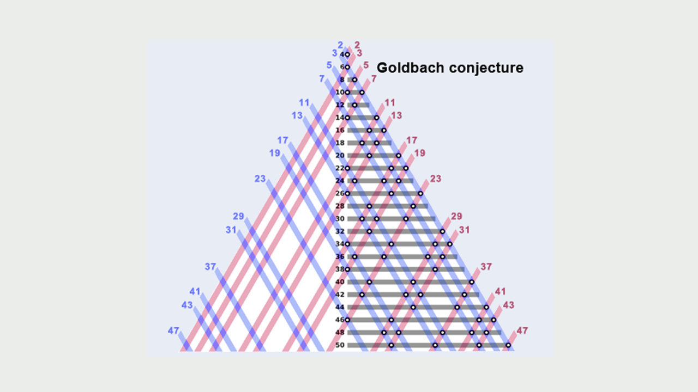
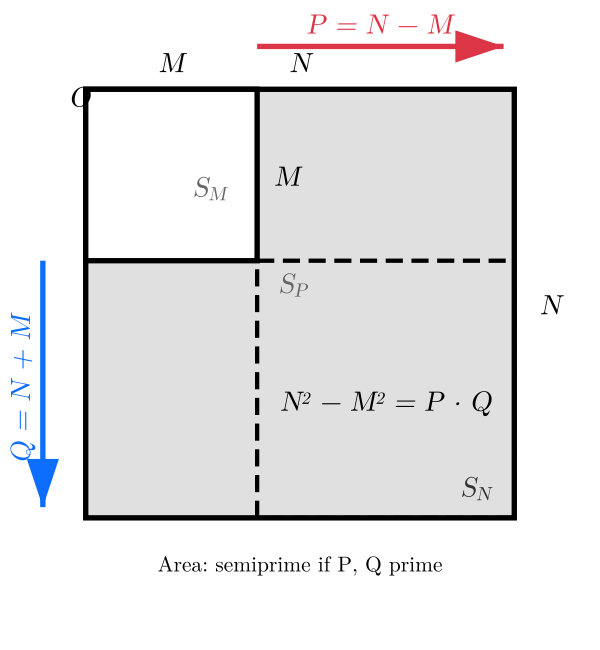

Author: Frank Vega
Institution: Information Physics Institute, Hialeah, FL, USA
Keywords: Goldbach conjecture, differences of primes, additive energy, explicit sieve bounds, prime gaps, Cramér's conjecture, computational evidence
The distinct-prime Goldbach conjecture asserts that for every $N \geq 4$ there is $M \in A_N = [1, N-3]$ with $N-M$ and $N+M$ both prime; geometrically, nested squares of side lengths $N$ and $M$ have an L-shaped difference of semiprime area $(N-M)(N+M)$. With $C_N$ and $D_N$ the sets of $M \in A_N$ for which $N-M$, respectively $N+M$, is prime, the conjecture for $2N$ is $C_N \cap D_N \neq \emptyset$. We embed this centered condition in a straddling one: $C_N \cap D_N$ lies in the set $E_N$ of half-differences $(Q-P)/2 \in A_N$ of primes $2 < P < N < Q < 2N$. From Mikawa's theorem on prime pairs with almost all differences we deduce $|A_N \setminus E_N| \ll_D N/(\log N)^D$ for every $D > 0$, and with explicit constants we prove $|E_N| > N/760$ for every $N \geq 3275$. Consequently, for all large $N$ and all but $O_D(N/(\log N)^D)$ primes $P < N$, the number $2N - P$ becomes prime after adding the difference $P' - P$ of two primes $P' < N$; Goldbach's partition is the case $P' = P$. In contrast, $|C_N \cap D_N| < (N-3) - \log^2(2N)$ for every $N \geq 34$, and covering all but $\log^2(2N)$ values of $A_N$ for all large $N$ would imply the Cramér-type bound $p' - p < 2\log^2(2p+2) + 2$. The method also shows that $2N$ is a sum of two distinct primes for more than $X/9600$ integers $N \leq X$, for every $X \geq 10^6$. Computations up to $N = 10^6$ compare the number of distinct-prime partitions with the Hardy–Littlewood prediction and measure the missing values of $E_N$ forced by prime gaps. The conjecture itself is not proved here.
The Goldbach conjecture asserts that every even integer greater than 2 is the sum of two primes. We study the variant with distinct primes:
Distinct-prime Goldbach conjecture: every even integer $2N \geq 8$ is the sum of two distinct primes.
This excludes only $4 = 2 + 2$ and $6 = 3 + 3$. For $N \geq 4$ it is equivalent to the existence of $M \geq 1$ with $N - M$ and $N + M$ both prime; this symmetric form is known (OEIS A082467).
The even Goldbach conjecture has been verified for all even integers up to $4 \cdot 10^{18}$ by Oliveira e Silva, Herzog and Pardi, and the least prime of a Goldbach partition of every such integer is at most $9781$. Together with our computation, this gives a partition into two distinct primes for every $8 \leq 2N \leq 4 \cdot 10^{18}$. The conjecture is therefore equivalent to its statement for $N > 2 \cdot 10^{18}$.
Start with a square $S_N$ of side length $N \geq 4$. Inside it, place a smaller square $S_M$ of side length $M$ (where $1 \leq M \leq N-3$) sharing the same corner. The L-shaped region between them has area:
$$N^2 - M^2 = (N - M)(N + M)$$
Let $P = N - M$ and $Q = N + M$. Then $P + Q = 2N$ and $P \cdot Q = N^2 - M^2$. Since $M \geq 1$ and $P \geq 3$, the numbers $P$ and $Q$ are distinct, and both must be odd to be prime.
$2N$ is the sum of two distinct primes $\Longleftrightarrow$ for some $M \in [1, N-3]$, both $P = N - M$ and $Q = N + M$ are prime $\Longleftrightarrow$ the L-shaped area is a semiprime for some $M \in [1, N-3]$.

Let $A_N = \{1, \dots, N-3\}$ and define
$$C_N = \{M \in A_N : N - M \text{ is prime}\}, \qquad D_N = \{M \in A_N : N + M \text{ is prime}\}.$$
Then $2N$ is the sum of two distinct primes if and only if $C_N \cap D_N \neq \emptyset$, and $R(2N) = |C_N \cap D_N|$ is the number of such partitions. An element $M \in C_N \cap D_N$ gives a prime pair $(N-M, N+M)$ centered at $N$.
The half-difference set asks only for a prime pair that straddles $N$:
$$E_N = \left\{\frac{Q - P}{2} \in A_N : P, Q \text{ prime},\ 2 < P < N < Q < 2N\right\}.$$
Every centered pair straddles $N$, so $C_N \cap D_N \subseteq E_N$. The coverage statistic of $E_N$ is
$$H(N) = \log^2(2N) - |A_N \setminus E_N| = \log^2(2N) - \bigl((N - 3) - |E_N|\bigr),$$
where $\log$ is the natural logarithm.
(1) Coverage of $A_N$ by straddling pairs.
(2) Goldbach partitions up to a difference of two primes.
$$Q' = (2N - P) + (P' - P).$$
(3) The centering step.
(4) An explicit positive proportion of Goldbach numbers. For every $X \geq 10^6$, more than $X/9600$ integers $4 \leq N \leq X$ have $R(2N) \geq 1$.
Two scripts produce the data. Their output uses the names of an earlier notation: in the output of experiment.py, $D_N$ denotes $E_N$, $S_N$ denotes $C_N \cap D_N$, and $G(N)$ denotes $H(N)$. The intervals are $I_2 = [4, 8]$ and $I_m = (2^m, 2^{m+1}]$ for $m \geq 3$.
experiment.py ($4 \leq N \leq 2^{14}$, 18.7 s)Table 1: Minimum of $H(N)$ on each interval
| $m$ | Range $I_m$ | Min at $N$ | Min $H(N)$ |
|---|---|---|---|
| 2 | $[4, 8]$ | 5 | 4.301898 |
| 3 | $(2^3, 2^4]$ | 9 | 7.354249 |
| 4 | $(2^4, 2^5]$ | 19 | 10.232033 |
| 5 | $(2^5, 2^6]$ | 61 | 14.078618 |
| 6 | $(2^6, 2^7]$ | 73 | 17.836335 |
| 7 | $(2^7, 2^8]$ | 151 | 20.608977 |
| 8 | $(2^8, 2^9]$ | 269 | 23.537165 |
| 9 | $(2^9, 2^{10}]$ | 541 | 28.812111 |
| 10 | $(2^{10}, 2^{11}]$ | 1327 | 33.154668 |
| 11 | $(2^{11}, 2^{12}]$ | 2161 | 35.081569 |
| 12 | $(2^{12}, 2^{13}]$ | 7069 | 42.329014 |
| 13 | $(2^{13}, 2^{14}]$ | 14138 | 44.057758 |
Table 2: Minimum of the centered statistic $H_R(N) = \log^2(2N) - ((N-3) - R(2N))$
| $m$ | Range $I_m$ | Min at $N$ | Min $H_R(N)$ |
|---|---|---|---|
| 2 | $[4, 8]$ | 7 | 3.96 |
| 3 | $(2^3, 2^4]$ | 16 | 1.01 |
| 4 | $(2^4, 2^5]$ | 31 | −8.97 |
| 5 | $(2^5, 2^6]$ | 64 | −34.46 |
| 6 | $(2^6, 2^7]$ | 128 | −86.25 |
| 7 | $(2^7, 2^8]$ | 256 | −203.08 |
| 8 | $(2^8, 2^9]$ | 511 | −441.98 |
| 9 | $(2^9, 2^{10}]$ | 1024 | −937.87 |
| 10 | $(2^{10}, 2^{11}]$ | 2047 | −1923.82 |
| 11 | $(2^{11}, 2^{12}]$ | 4096 | −3935.80 |
| 12 | $(2^{12}, 2^{13}]$ | 8191 | −7953.83 |
| 13 | $(2^{13}, 2^{14}]$ | 16369 | −16029.92 |
Further results for every $4 \leq N \leq 2^{14}$:
Small cases:
| $N$ | $C_N$ | $E_N$ | $C_N \cap D_N$ | $C_N \cap E_N$ | Partition |
|---|---|---|---|---|---|
| 4 | $\{1\}$ | $\{1\}$ | $\{1\}$ | $\{1\}$ | $8 = 3 + 5$ |
| 5 | $\{2\}$ | $\{2\}$ | $\{2\}$ | $\{2\}$ | $10 = 3 + 7$ |
| 6 | $\{1,3\}$ | $\{1,2,3\}$ | $\{1\}$ | $\{1,3\}$ | $12 = 5 + 7$ |
| 7 | $\{2,4\}$ | $\{3,4\}$ | $\{4\}$ | $\{4\}$ | $14 = 3 + 11$ |
| 8 | $\{1,3,5\}$ | $\{2,3,4,5\}$ | $\{3,5\}$ | $\{3,5\}$ | $16 = 3 + 13$ |
| 9 | $\{2,4,6\}$ | $\{2,3,4,5,6\}$ | $\{2,4\}$ | $\{2,4,6\}$ | $18 = 5 + 13$ |
| 10 | $\{3,5,7\}$ | $\{2,3,4,5,6,7\}$ | $\{3,7\}$ | $\{3,5,7\}$ | $20 = 3 + 17$ |
| 11 | $\{4,6,8\}$ | $\{3,4,5,6,7,8\}$ | $\{6,8\}$ | $\{4,6,8\}$ | $22 = 3 + 19$ |
| 12 | $\{1,5,7,9\}$ | $\{1,3,4,5,6,7,8,9\}$ | $\{1,5,7\}$ | $\{1,5,7,9\}$ | $24 = 5 + 19$ |
car/large_range.py ($4 \leq N \leq 10^6$, 184.4 s)Table A: Coverage of $A_N$ by $E_N$
| $m$ | Range $I_m$ | Min at $N$ | Min $H(N)$ | Max $|A_N \setminus E_N|$ (at $N$) | Min $|E_N|/N$ |
|---|---|---|---|---|---|
| 2 | $[4, 8]$ | 5 | 4.301898 | 2 (7) | 0.200000 |
| 3 | $(2^3, 2^4]$ | 9 | 7.354249 | 2 (11) | 0.545455 |
| 4 | $(2^4, 2^5]$ | 19 | 10.232033 | 6 (29) | 0.684211 |
| 5 | $(2^5, 2^6]$ | 61 | 14.078618 | 9 (61) | 0.803279 |
| 6 | $(2^6, 2^7]$ | 73 | 17.836335 | 10 (113) | 0.863014 |
| 7 | $(2^7, 2^8]$ | 151 | 20.608977 | 13 (165) | 0.900662 |
| 8 | $(2^8, 2^9]$ | 269 | 23.537165 | 16 (269) | 0.929368 |
| 9 | $(2^9, 2^{10}]$ | 541 | 28.812111 | 24 (986) | 0.957486 |
| 10 | $(2^{10}, 2^{11}]$ | 1327 | 33.154668 | 29 (1327) | 0.975377 |
| 11 | $(2^{11}, 2^{12}]$ | 2161 | 35.081569 | 35 (2161) | 0.982416 |
| 12 | $(2^{12}, 2^{13}]$ | 7069 | 42.329014 | 49 (7069) | 0.991389 |
| 13 | $(2^{13}, 2^{14}]$ | 14138 | 44.057758 | 61 (14138) | 0.994665 |
| 14 | $(2^{14}, 2^{15}]$ | 17863 | 46.906582 | 64 (29443) | 0.996305 |
| 15 | $(2^{15}, 2^{16}]$ | 43331 | 55.271687 | 74 (43331) | 0.998006 |
| 16 | $(2^{16}, 2^{17}]$ | 66239 | 58.102490 | 90 (107525) | 0.998732 |
| 17 | $(2^{17}, 2^{18}]$ | 206699 | 54.240920 | 113 (206699) | 0.999315 |
| 18 | $(2^{18}, 2^{19}]$ | 484853 | 55.019283 | 135 (484853) | 0.999576 |
| 19 | $(2^{19}, 2^{20}]$ | 668364 | 58.971771 | 140 (668364) | 0.999749 |
Table B: Distinct-prime partitions and the Hardy–Littlewood prediction
Here $\mathrm{HL}(2N) = \omega \prod_{p \mid N,\ p > 2} \frac{p-1}{p-2} \int_2^{2N-2} \frac{dt}{\log t \, \log(2N - t)}$, with $\omega \approx 0.6601618372$ and the integral computed by 64-point Gauss–Legendre quadrature.
| $m$ | Range $I_m$ | Min $R(2N)$ (at $N$) | Min ratio | Max ratio | Mean ratio |
|---|---|---|---|---|---|
| 2 | $[4, 8]$ | 1 (4) | 0.2497 | 0.8705 | 0.5112 |
| 3 | $(2^3, 2^4]$ | 2 (9) | 0.3711 | 0.6800 | 0.5565 |
| 4 | $(2^4, 2^5]$ | 1 (19) | 0.2806 | 1.1702 | 0.6706 |
| 5 | $(2^5, 2^6]$ | 2 (34) | 0.4264 | 1.0380 | 0.7407 |
| 6 | $(2^6, 2^7]$ | 4 (76) | 0.5738 | 1.0863 | 0.7970 |
| 7 | $(2^7, 2^8]$ | 6 (139) | 0.5280 | 1.0909 | 0.8530 |
| 8 | $(2^8, 2^9]$ | 9 (271) | 0.6300 | 1.1322 | 0.8890 |
| 9 | $(2^9, 2^{10}]$ | 16 (556) | 0.6960 | 1.1621 | 0.9258 |
| 10 | $(2^{10}, 2^{11}]$ | 26 (1039) | 0.7159 | 1.1448 | 0.9463 |
| 11 | $(2^{11}, 2^{12}]$ | 45 (2104) | 0.7833 | 1.1361 | 0.9624 |
| 12 | $(2^{12}, 2^{13}]$ | 75 (4276) | 0.7754 | 1.1131 | 0.9750 |
| 13 | $(2^{13}, 2^{14}]$ | 131 (8311) | 0.8673 | 1.1129 | 0.9820 |
| 14 | $(2^{14}, 2^{15}]$ | 222 (16519) | 0.8807 | 1.0906 | 0.9887 |
| 15 | $(2^{15}, 2^{16}]$ | 406 (32789) | 0.9093 | 1.0711 | 0.9918 |
| 16 | $(2^{16}, 2^{17}]$ | 707 (65551) | 0.9181 | 1.0570 | 0.9946 |
| 17 | $(2^{17}, 2^{18}]$ | 1279 (132274) | 0.9424 | 1.0529 | 0.9962 |
| 18 | $(2^{18}, 2^{19}]$ | 2291 (262436) | 0.9536 | 1.0385 | 0.9975 |
| 19 | $(2^{19}, 2^{20}]$ | 4130 (525166) | 0.9657 | 1.0296 | 0.9982 |
$R(2N) \geq 1$ for every $4 \leq N \leq 10^6$: every even integer $8 \leq 2N \leq 2 \cdot 10^6$ is the sum of two distinct primes.
Table C: Missing values of $E_N$ forced by prime gaps
$F(N)$ is the number of missing values forced by the two gap obstructions of Section 4 (3), and $U(N) = |A_N \setminus E_N| - F(N)$.
| $m$ | Range $I_m$ | Max $|A_N \setminus E_N|$ | Max $F(N)$ | Max $U(N)$ (at $N$) | Mean $U(N)$ | Share forced |
|---|---|---|---|---|---|---|
| 2 | $[4, 8]$ | 2 | 2 | 0 (4) | 0.000 | 1.0000 |
| 3 | $(2^3, 2^4]$ | 2 | 2 | 1 (12) | 0.125 | 0.9091 |
| 4 | $(2^4, 2^5]$ | 6 | 4 | 4 (30) | 0.812 | 0.7111 |
| 5 | $(2^5, 2^6]$ | 9 | 7 | 5 (60) | 1.375 | 0.6562 |
| 6 | $(2^6, 2^7]$ | 10 | 9 | 6 (128) | 2.125 | 0.6344 |
| 7 | $(2^7, 2^8]$ | 13 | 11 | 9 (166) | 3.555 | 0.5221 |
| 8 | $(2^8, 2^9]$ | 16 | 14 | 9 (311) | 4.648 | 0.4868 |
| 9 | $(2^9, 2^{10}]$ | 24 | 17 | 15 (702) | 7.020 | 0.4439 |
| 10 | $(2^{10}, 2^{11}]$ | 29 | 21 | 20 (1373) | 8.673 | 0.4420 |
| 11 | $(2^{11}, 2^{12}]$ | 35 | 25 | 26 (3083) | 10.956 | 0.4092 |
| 12 | $(2^{12}, 2^{13}]$ | 49 | 27 | 35 (7072) | 14.507 | 0.3706 |
| 13 | $(2^{13}, 2^{14}]$ | 61 | 50 | 42 (14249) | 16.576 | 0.3619 |
| 14 | $(2^{14}, 2^{15}]$ | 64 | 45 | 51 (24683) | 20.686 | 0.3350 |
| 15 | $(2^{15}, 2^{16}]$ | 74 | 52 | 57 (63199) | 23.915 | 0.3218 |
| 16 | $(2^{16}, 2^{17}]$ | 90 | 53 | 69 (107449) | 27.847 | 0.3072 |
| 17 | $(2^{17}, 2^{18}]$ | 113 | 69 | 90 (250433) | 32.279 | 0.2922 |
| 18 | $(2^{18}, 2^{19}]$ | 135 | 83 | 119 (484857) | 36.733 | 0.2803 |
| 19 | $(2^{19}, 2^{20}]$ | 140 | 93 | 115 (854722) | 41.545 | 0.2698 |
The distinct-prime Goldbach conjecture is not proved here. For all large $N$, the set $C_N \cap E_N$ contains all but $O_D(N/(\log N)^D)$ elements of $C_N$, and $C_N \cap D_N$ is the subset of those $M$ for which the centered pair $(N - M, N + M)$ realizes the half-difference $M$. The conjecture requires one such $M$ for every $N > 2 \cdot 10^{18}$.
experiment.py uses only the Python standard library. Run python experiment.py (default $N \leq 2^{14}$); it appends its output to experimental_results.log. The output of our run is in experimental_results.txt.car/large_range.py uses Python and NumPy. Run python car/large_range.py (default $N \leq 10^6$; --max-n sets the range); it writes its output to large_range_results.log. The output of our run is in large_range_results.txt.Requirements: Python 3.10+ (Python 3.12 was used), NumPy for car/large_range.py.
The scripts were written with Claude (Claude Opus 5.5) and run by the author.
Available as PDF at Nested Squares and Distinct-Prime Goldbach Partitions.